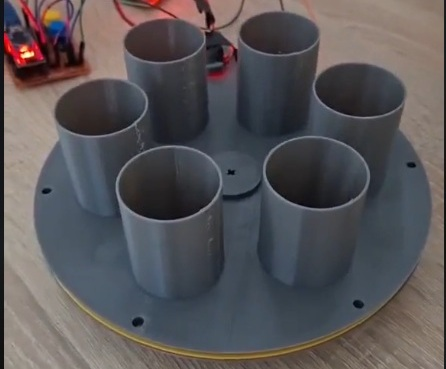

This is tiny project i volontary built to solve problem of needing to feed fishes while on vacation. It consist of 5 slot revolving platform filled with food. Its driven by stepper motor using belt drive while LDR + LED checks position. Arduino controls stepper once 24h till next slot is aligned with output hole .

Project idea was suggested by father. My intial idea was to go arduinoless where DC motor would drive the belt. Dc motor would be driven by BJT transistor while BJT base would take input from voltage divider. Voltage divider would consist of LDR and resistor which thanks to led would detect position. This circuit would be run by 24H pulse which overrides it and motor stops once hole is reached.
There was one big issue : deadline of few days and lack of materials. I only had DC motors from DVD burners but thoose run at high RPM, which would probably cause the circuit to miss the detection as momentum would carry the revolver beyond stopping position. With no time to try desiging gearbox i decided to try and use large belt drive approach with aditonaly using flat base to introduce friction. Due to not knowing ammount of food i oversized cups.
After first prototype model was done , testing revealed the contraption span way too fast and that there was 0 friction as plates didnt even touch. This meant designing new base and going to an stepper drive with arduino.
After few failed designs (while reusing top revolver) i got to first working version. The stepper did skip steps so circuit still needed to rely on feedback. Finaly it was only matter of writing code that will run stepper every 24h to next slot.
The contraption proved itself to work quite well and we swiftly made crude enclosure. In end device failed at its task , USB plug in adapter had play in it and arduino ended up being without supply. We couldnt knew it due to fixed enclosure .
Since this project ended up being total waste of material and only partial succes. There are plans to make V2 of this project with more efficent design .